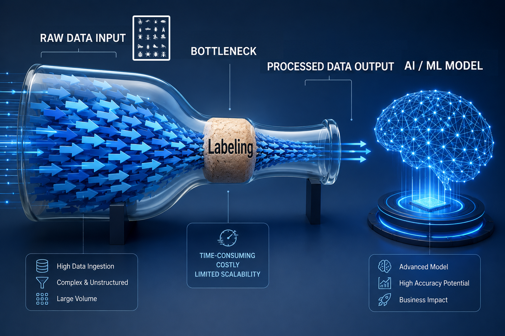
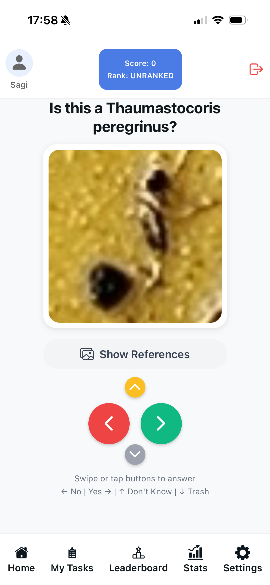
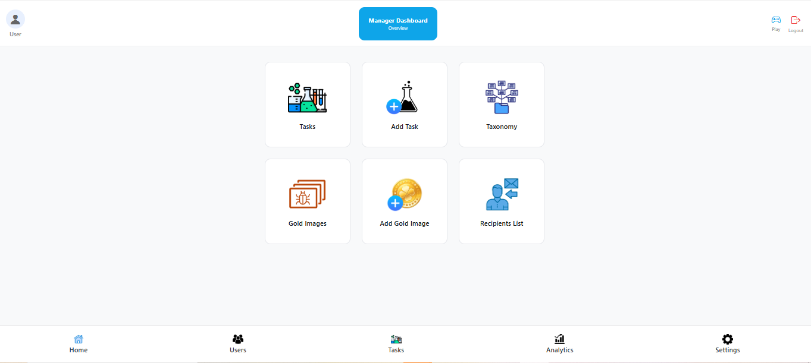

SwipeLab App
// Citizen Science · Mobile App · Full-Stack
A final-year Software Engineering project at Ben-Gurion University, developed to solve real-world challenges in ecological research and data science.
Ecological research generates massive amounts of raw data, but training effective AI/ML models requires human-verified labels. Currently, this manual classification process relies on a small handful of expert researchers. This creates a severe bottleneck that is time-consuming, costly, and fundamentally limits the scalability of scientific progress.

STARdbi contains over 380,000 insect images from 84 ecological sites, but scientific analysis and ML models require labeled data. Manual classification by experts is slow and doesn't scale, leaving massive amounts of valuable data unused.
SwipeLab transforms this bottleneck into an opportunity. By gamifying the classification process, we enable non-experts to contribute meaningful labels through a simple, engaging swipe interface. Researchers can create tasks, monitor progress, and export high-quality labeled datasets for ML training.


Consider Diaphorina citri, spreading through Israeli citrus orchards. While harmless itself, it carries Greening disease—devastating to citrus crops. SwipeLab helps researchers track biological solutions like Tamarixia wasps by enabling rapid, large-scale data analysis.
The SwipeLab platform leverages an event-driven architecture to manage high-throughput image labeling tasks, authentication, and gamification mechanics synchronously.

"SwipeLab addresses a critical bottleneck in ecological research. The gamified approach makes citizen science accessible and effective, enabling us to process data at unprecedented scale."